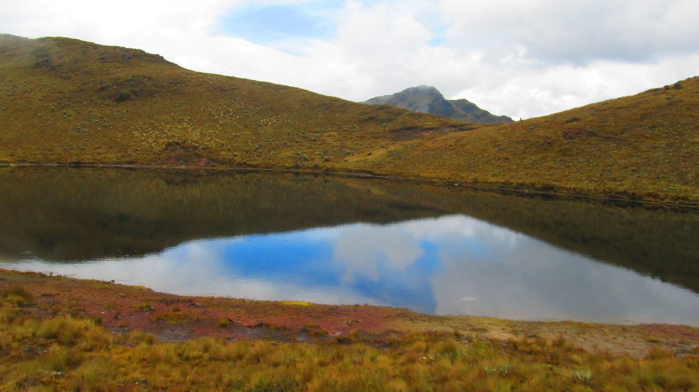
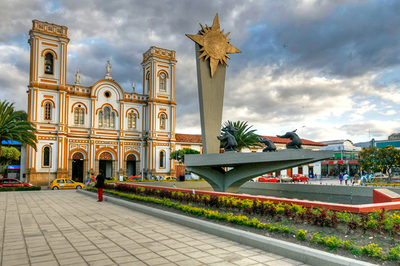
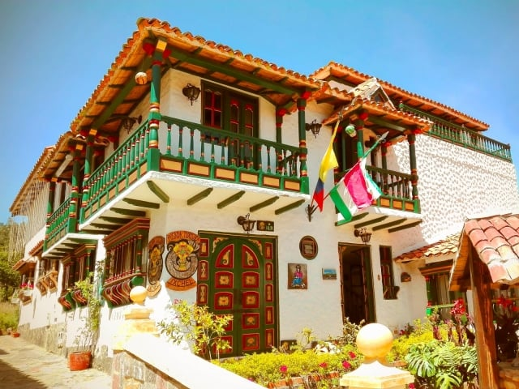
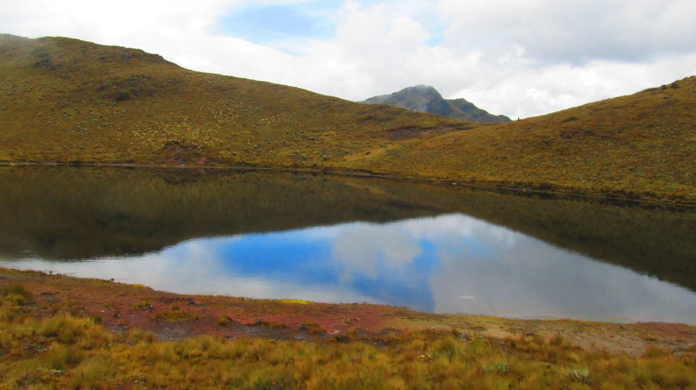
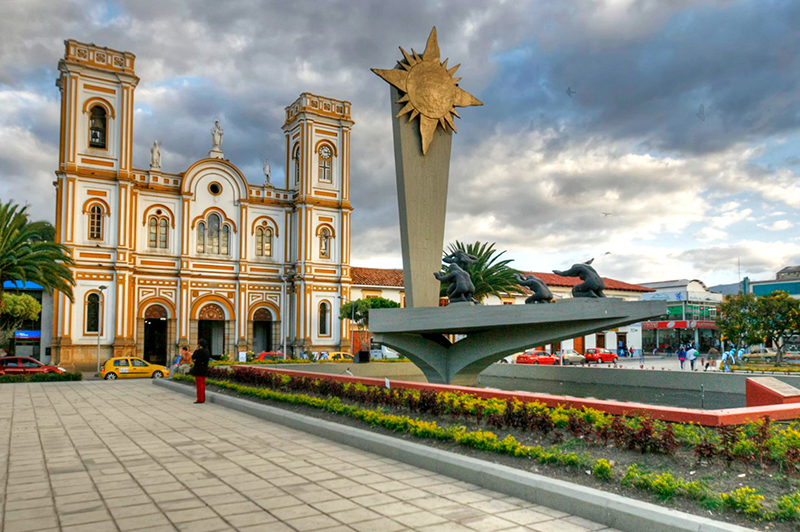
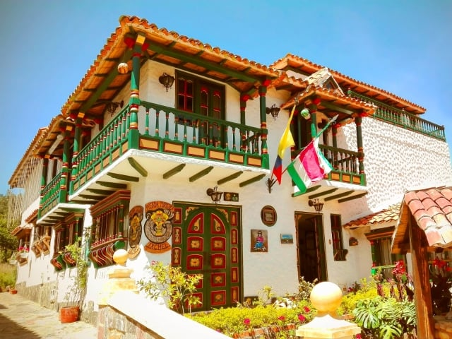
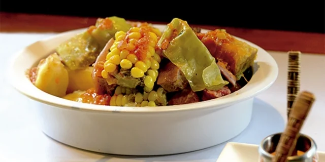
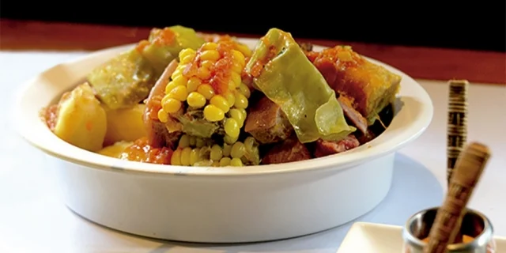

BOYACA
REGION: andina
1. CASA TERRACOTA
2. PLAZA MAYOR
3. LAGUNA
4. SOGAMOSO
5. DUITAMA
CASA TERRACOTA
En este lugar mágico se funden la arquitectura y el diseño, así como las demás artes y oficios. Desde su origen y concepto, el arquitecto y ceramista colombiano Octavio Mendoza Morales, ha buscado promover un estilo de vida alternativo y armónico tanto para el individuo y la comunidad, como para el medio ambiente circundante.
Casa Terracota es un proyecto de construcción que utiliza los cuatro elementos, tierra, aire, agua y fuego, convirtiendo la tierra cocida en arquitectura.
PLAZA MAYOR
Es considerada la plaza más grande del país con 14.000 metros cuadrados. Su aspecto colonial, representado en los pisos de piedra,constituye una de sus características principales. En el centro se destaca una pila tallada en piedra que siglos atrás, abastecía de agua potable a los habitantes de la localidad
LAGUNA
A los visitantes se les invita a conocer Careperro, es un sitio mágico, fantástico y lleno de tranquilidad, especial para olvidarse por unos instantes de los problemas cotidianos. La variedad de vegetación propia del páramo invita a reconocer la grandeza de la naturaleza. La fauna en esta zona también está presente, puede mirar tinajos, conejos y según testimonios de nativos se puede llegar a encontrarse con tigrillos.
SOGAMOSO
Sogamoso es un municipio del centro de Boyacá, Colombia que florece en el territorio donde los miembros de la cultura muisca adoraban al sol. El nombre de la ciudad, fundada el 6 de septiembre de 1810, demuestra el orgullo por sus raíces indígenas: Sogamoso proviene del vocablo Suamox -que significa 'morada del Sol'.
DUITAMA
“La perla de Boyacá”, como también la llaman sus habitantes, es considerado el centro económico más importante de la provincia de Tundama. Con la llegada de la vía férrea, en 1923, y la terminación de la vía que comunica con Bogotá, se inició un proceso de reactivación económica que fortaleció varios sectores productivos en la región; entre ellos, destaca la industria harinera, la cervecera y el cemento. Posteriormente ingresan empresas, en donde destacan Coca-Cola y Sofasa, que brindan otra dimensión al desarrollo social y administrativo del municipio. En su territorio hay una importante oferta turística, laboral y comercial que atrae a miles de visitantes cada día.

 






 
